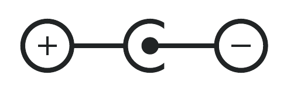
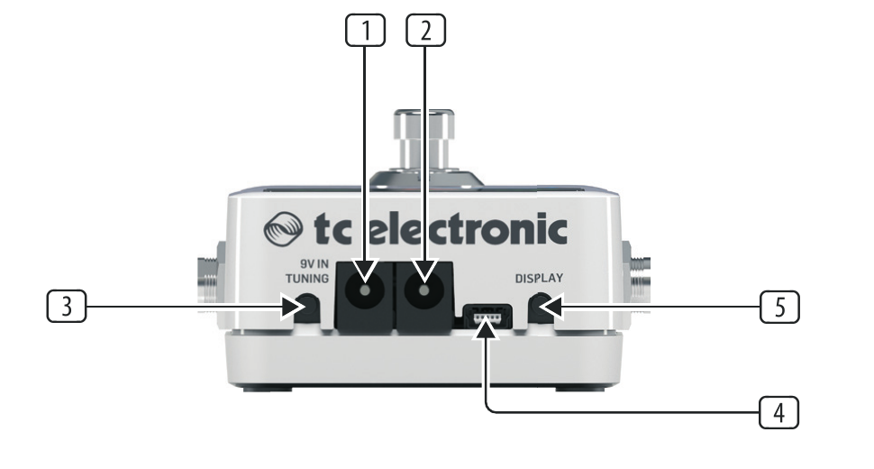
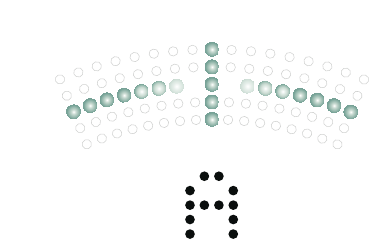
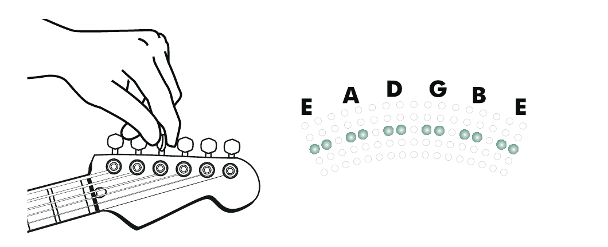

POLYTUNE 3
Ultra-Compact Polyphonic Tuner with Multiple Tuning Modes and Built-In BONAFIDE BUFFER — User Manual
Important Safety Instructions
Terminals marked with the electric-shock symbol carry electrical current of sufficient magnitude to constitute risk of electric shock. Use only high-quality professional speaker cables with ¼" TS or twist-locking plugs pre-installed. All other installation or modification should be performed only by qualified personnel.
This symbol, wherever it appears, alerts you to the presence of uninsulated dangerous voltage inside the enclosure – voltage that may be sufficient to constitute a risk of shock.
This symbol, wherever it appears, alerts you to important operating and maintenance instructions in the accompanying literature. Please read the manual.
Caution
To reduce the risk of electric shock, do not remove the top cover (or the rear section). No user serviceable parts inside. Refer servicing to qualified personnel.
Caution
To reduce the risk of fire or electric shock, do not expose this appliance to rain and moisture. The apparatus shall not be exposed to dripping or splashing liquids and no objects filled with liquids, such as vases, shall be placed on the apparatus.
Caution
These service instructions are for use by qualified service personnel only. To reduce the risk of electric shock do not perform any servicing other than that contained in the operation instructions. Repairs have to be performed by qualified service personnel.
- Read these instructions.
- Keep these instructions.
- Heed all warnings.
- Follow all instructions.
- Do not use this apparatus near water.
- Clean only with dry cloth.
- Do not block any ventilation openings. Install in accordance with the manufacturer's instructions.
- Do not install near any heat sources such as radiators, heat registers, stoves, or other apparatus (including amplifiers) that produce heat.
- Do not defeat the safety purpose of the polarized or grounding-type plug. A polarized plug has two blades with one wider than the other. A grounding-type plug has two blades and a third grounding prong. The wide blade or the third prong are provided for your safety. If the provided plug does not fit into your outlet, consult an electrician for replacement of the obsolete outlet.
- Protect the power cord from being walked on or pinched particularly at plugs, convenience receptacles, and the point where they exit from the apparatus.
- Use only attachments/accessories specified by the manufacturer.
- Use only with the cart, stand, tripod, bracket, or table specified by the manufacturer, or sold with the apparatus. When a cart is used, use caution when moving the cart/apparatus combination to avoid injury from tip-over.
- Unplug this apparatus during lightning storms or when unused for long periods of time.
- Refer all servicing to qualified service personnel. Servicing is required when the apparatus has been damaged in any way, such as power supply cord or plug is damaged, liquid has been spilled or objects have fallen into the apparatus, the apparatus has been exposed to rain or moisture, does not operate normally, or has been dropped.
- The apparatus shall be connected to a MAINS socket outlet with a protective earthing connection.
- Where the MAINS plug or an appliance coupler is used as the disconnect device, the disconnect device shall remain readily operable.
- Correct disposal of this product: This symbol indicates that this product must not be disposed of with household waste, according to the WEEE Directive (2012/19/EU) and your national law. This product should be taken to a collection center licensed for the recycling of waste electrical and electronic equipment (EEE). The mishandling of this type of waste could have a possible negative impact on the environment and human health due to potentially hazardous substances that are generally associated with EEE. At the same time, your cooperation in the correct disposal of this product will contribute to the efficient use of natural resources. For more information about where you can take your waste equipment for recycling, please contact your local city office, or your household waste collection service.
- Do not install in a confined space, such as a book case or similar unit.
- Do not place naked flame sources, such as lighted candles, on the apparatus.
- Please keep the environmental aspects of battery disposal in mind. Batteries must be disposed-of at a battery collection point.
- Use this apparatus in tropical and/or moderate climates.
Contents
Important Safety Instructions
Legal Disclaimer
Limited Warranty
1. About this Manual
2. Introduction
3. Operation – Inputs, Outputs and Controls
4. Operation – Tuning with POLYTUNE 3
5. Frequently Asked Questions (FAQ)
6. Operation – Bypass Mode
7. Maintenance
8. Links
9. Technical Specifications
FCC Compliance
Legal Disclaimer
MUSIC Group accepts no liability for any loss which may be suffered by any person who relies either wholly or in part upon any description, photograph, or statement contained herein. Technical specifications, appearances and other information are subject to change without notice. All trademarks are the property of their respective owners. MIDAS, KLARK TEKNIK, LAB GRUPPEN, LAKE, TANNOY, TURBOSOUND, TC ELECTRONIC, TC HELICON, BEHRINGER, BUGERA and DDA are trademarks or registered trademarks of MUSIC Group IP Ltd. © MUSIC Group IP Ltd. 2017 All rights reserved.
Limited Warranty
For the applicable warranty terms and conditions and additional information regarding MUSIC Group's Limited Warranty, please see complete details online at music-group.com/warranty.
1. About this Manual
Thank you for spending your hard-earned money on this TC ELECTRONIC product! We have done our best to ensure that it will serve you for many years to come, and we hope that you will enjoy using it.
This manual is available as a PDF download from the TC ELECTRONIC website.
Please read this manual in full, or you may miss important information.
Please do not operate your TC device before you have made all connections to external equipment as described in the “2.2 Setting up” section. In the subsequent sections of the manual, we assume that all connections are made correctly and that you are familiar with the previous sections.
We reserve the right to change the contents of this manual at any time.
To download the most current version of this manual, view the product warranty, and access the growing FAQ database for this product, visit the web page tcelectronic.com/support/
2. Introduction
As the world's first polyphonic tuner, the original POLYTUNE took the hearts of guitarists by storm. Features such as the MonoPoly technology (which automatically detects whether you want to tune a single string or all strings) made tuning a bass or guitar faster and easier than ever before.
So how do you make the best-selling polyphonic tuner even better? You take it to the next level by: providing multiple tuning modes, including polyphonic, chromatic, strobe and a variety of altered tunings; adding an onboard BONAFIDE BUFFER to preserve your tone over long cable runs and pedal board signal paths; and upgrading the LED display for even higher tuning accuracy.
Enter POLYTUNE 3.
2.1 Unpacking
Your TC ELECTRONIC effect pedal box should contain the following items:
- Your TC ELECTRONIC effect pedal
- 1 TC ELECTRONIC sticker
- 1 Quick Start Guide for quick information about the pedal's controls
Inspect all items for signs of transit damage. In the unlikely event of transit damage, inform the carrier and supplier.
If damage has occurred, keep all packaging, as it can be used as evidence of excessive handling force.
2.2 Setting up
Connect a 9 V power supply with the following symbol to the DC input socket of your TC ELECTRONIC effect pedal.

This product does not come with a power supply. We recommend using TC ELECTRONIC's PowerPlug 9 (sold separately).
- You can also power POLYTUNE 3 using a standard 9V battery (not included), but if you intend to power additional pedals using the power out jack, you need to use a power supply. Plug the power supply into a power outlet.
- Plug the power supply into a power outlet.
- Connect your instrument to the in jack on the right side of the pedal using a ¼" jack cable.
- Connect the out jack on the left side of the pedal to your amplifier using a ¼" jack cable.
- If you have another 9 V guitar pedal that you want to power, connect it to the power out socket on the rear of the pedal.
2.3 Get ready for a new tuning experience!
Tuning your instrument with POLYTUNE 3 is fast and intuitive. If you don't feel like reading the manual, just strum your instrument and watch the display. We think you'll like what you see.
If you want to learn more – read on!
2.4 True Bypass
Here at TC ELECTRONIC, we have a simple philosophy: When you are using one of our products, you should hear something great – and if you don't, you shouldn't hear it at all. This is why this pedal sports True Bypass. When it is bypassed, it is really off and has zero influence on your tone, resulting in optimum clarity and zero loss of high end.
POLYTUNE 3 lets you switch between True Bypass and Buffered Bypass modes, the latter giving you an “always on” option that keeps the tuner in full operation – even when your signal is not muted. Tuning made simple and more efficient than ever.
Sometimes, it is advisable to switch an effect pedal from True Bypass to Buffered Bypass mode. For more information, see “6.2 Switching between True Bypass and Buffered Bypass”.
2.5 Brighter than a thousand suns
When you need to tune, you need to tune. And the last thing you want to worry about at that moment is a display that is either too bright for the club stage or unusable in the bright sun of a late afternoon gig. The display on POLYTUNE 3 is primed with some of the brightest LEDs you have ever laid your eyes on. And the ambient light sensor makes sure you get just the right amount of brightness. It's the best of/for both worlds!
2.6 Strobe tuning
TC has received many requests from the guitar community for a strobe tuner, so we added a strobe mode, which is both lightning fast and ultra precise. And with a pitch detection accuracy of ±0.1 Cent, (that's 1/1000 of a semitone!) this is the right tool for fine-tuning your precious instrument – wherever you may be.
2.7 Total recall
POLYTUNE 3 stores your preferences. From pitch reference to selected tuning mode, it hangs on to this information even after it is powered down – making sure you only have to set these parameters once. And just to be safe, it will display the current settings when you plug in your instrument. One less thing to worry about!
Of course, POLYTUNE 3 still has all the features from the original POLYTUNE that users know and love.
- POLYTUNE®: Tune all strings simultaneously
- For guitars and basses
- Supports Drop-D and capo tuning modes
- True bypass with silent tuning
- Buffered bypass to compensate for long cable runs
- DC output for powering other pedals
POLYTUNE 3 will allow you to tune your instrument faster and easier than ever before, so you can go back to doing the one thing we know you care about: playing your music.
Enjoy!
3. Operation – Inputs, Outputs and Controls

1POWER input To power up your pedal, connect a power supply to its power input socket. POLYTUNE 3 requires a 9V power supply providing 100 mA or more (not supplied). To minimize hum, use a power supply with isolated outputs.
The power input of this pedal is a standard 5.5/2.1 mm DC plug (centre = negative).
2POWER output If you are using an external power supply to power POLYTUNE 3, you can use the power out jack of POLYTUNE 3 to provide power to other, daisy-chained guitar pedals.
- Make sure that your power supply delivers sufficient power to cover the power consumption of all connected pedals.
- Current draw on pedals daisy-chained to the power out jack may not exceed 2A.
3TUNING MODE button Set the tuning mode button according to the instrument's tuning. Use either standard (“e”) or one of the several dropped tuning or capo modes.
Tuning modes are explained in the following section of this manual (“How to use POLYTUNE 3”).
The selected tuning mode is stored and will be recalled when you power on POLYTUNE 3 again.
4USB port If there should be firmware updates for this pedal, they can be installed by connecting it to your computer using this port.
5DISPLAY MODE button Use the display mode button to switch between the various display modes.
The various display modes are explained in the following section of this manual (“How to use POLYTUNE 3”).
The selected display mode is stored and will be recalled when you power on POLYTUNE 3 again.
6DISPLAY The LEDs of the POLYTUNE 3 display are extremely bright; ensuring a clear readout even in broad daylight.
The various display modes are explained in the following section of this manual (“How to use POLYTUNE 3”).
7AMBILIGHT sensor In the lower right corner of the display is an ambient light sensor that detects the strength of the surrounding light and automatically adjusts the display brightness accordingly. This ensures you can see and correct your instrument's tuning under all conditions. This feature even extends battery life by reducing display brightness to what is required in a given situation.
8AUDIO INPUT Connect your instrument to the IN jack on the right side of the pedal.
The audio input of this pedal is a standard ¼" jack (mono/TS).
When you connect your instrument to the audio input, the following information will be displayed:
- Standard (“STD”) or Drop D tuning mode
- the currently selected display mode (Needle / Strobe, Guitar / Bass)
- the currently selected tuning mode
- the reference pitch.
For best results, place POLYTUNE 3 in your signal chain before your drive, distortion and vibrato pedals. A distorted or modulated signal is harder to analyze.
If the pedal runs on battery power, we recommend removing your instrument from the audio input to preserve battery power when you don't play.
9AUDIO OUTPUT Connect the OUT jack of POLYTUNE 3 to the input jack of the next device in the signal chain.
The audio output of this pedal is a standard ¼" jack (mono/TS).
10FOOTSWITCH To turn the tuner on or off, just tap the footswitch.
Notes regarding tuning and signal output:
- When the tuner is active, the output will automatically be muted for silent tuning.
- When the tuner is active and no signal is detected, four red LEDs will light on the bottom of the display, indicating that POLYTUNE 3 is ready for tuning.
- POLYTUNE 3 features a true bypass circuit that leaves your beloved tone unaltered when the tuner is bypassed.
4. Operation – Tuning with POLYTUNE 3
4.1 Chromatic vs. polyphonic tuning
A very simple guitar tuner will only allow you to tune open strings, one string at a time – e.g., E-A-D-G-B-E for the standard tuning of a guitar.
POLYTUNE 3 is a chromatic tuner – meaning it will detect and allow you to tune all twelve notes of the scale.
But that's not all. Other than a traditional tuner, POLYTUNE 3 allows you to play all of your instrument's strings simultaneously when tuning. POLYTUNE 3 will detect which strings need to be tuned and indicate those strings in its display. This allows you to tune your instrument much faster.
Finally, you may have tuned one or all strings on your instrument differently from standard tuning, or you may be using a capo to change the playable length of the strings.
In all of these situations, POLYTUNE 3 has you covered.
4.2 Display modes
If you press the display mode button on the rear of POLYTUNE 3 once, the currently selected display mode will be shown. Pressing the display mode button repeatedly will cycle through these modes:
- Guitar / Needle mode (indicated by a “G” and the center LED column lighting up).
- Guitar / Strobe mode (indicated by a “G” and the middle row of LEDs lighting up).
- Bass / Needle mode (indicated by a “B” and the center LED column lighting up).
- Bass / Strobe mode (indicated by a “B” and the middle row of LEDs lighting up).
4.3 Needle mode
In Needle mode, when you tune a single string, pitch is indicated by a column of five LEDs in the upper part of the display, and the name of the target note is displayed at the bottom of the display.
If the string you are tuning is too low, LEDs to the left of the center column will light up. If the string is too high, LEDs to the right of the center column will light up.
Tune the string until the middle column and the middle row of green LEDs lights up. This means you are “on target”.

Needle mode – A string in tune
4.4 Strobe mode
In Strobe mode, the difference between the correct (target) frequency and the actual detected frequency is displayed by two indicators simultaneously:
- Red LEDs to the left (pitch too low) or to the right (pitch too high) of the center LED column
- Rotating segments in the display. The closer the detected frequency is to the target frequency, the slower the rotation.
Tune the string until the rotating pattern has come to a stop and only the middle column of green LED lights up.
4.5 Polyphonic tuning
As you know by now, POLYTUNE 3 is a polyphonic tuner. You can strum your instrument, and POLYTUNE 3 will analyze and display the tuning of all strings.
So how do you activate polyphonic tuning mode?
You don't – it just works. Strum, tune, rock on!
Strum your guitar. Strings that are in tune will be represented by two green LEDs. Strings that need tuning are represented by two red LEDs below (flat) or above (sharp) the middle row.

Tune your guitar and strum again. Your instrument is in tune when all strings are represented by two green LEDs in the middle row.
Of course, only the strings that are actually present and played will be shown in the display. So if you tune a four string bass, only four LED columns will light up.
4.6 Drop D tuning
“Drop D” is a popular tuning (also known as D-A-D-G-B-E) in which the lowest string of a guitar is tuned down (“dropped”) from E to D.
If you want to tune an instrument set to “Drop D”, follow these steps:
- Press and hold the POLYTUNE 3 footswitch for about three seconds.
- The word “DROP” will be displayed briefly, and the default “ready for tuning” indicator at the bottom of the display will change from a small square to a “d”.
- If you want to switch POLYTUNE 3 back to standard tuning, press and hold the footswitch for three seconds again.
- “STD” will be displayed briefly, and the “ready for tuning” indicator will go back to a small square.
4.7 Alternate tunings and capos
There's more to life than standard E-A-D-G-B-E tuning! You may have tuned all strings of your instruments down, or you may be using a capo. In that case, tell POLYTUNE 3 about your instrument's tuning by pressing the TUNING MODE button.
If you press the TUNING MODE button once, the current tuning will be displayed (“-- E --” for Standard Tuning). Pressing the tune button repeatedly will cycle through the following tunings:
| Display | Mode |
|---|---|
| --- E --- | Standard Tuning |
| Eb | All strings tuned down 1 semitone |
| D | All strings tuned down 2 semitones |
| Db | All strings tuned down 3 semitones |
| C | All strings tuned down 4 semitones |
| B | All strings tuned down 5 semitones |
| F 1 | Capo at first fret |
| Gb 2 | Capo at second fret |
| G 3 | Capo at third fret |
| Ab 4 | Capo at fourth fret |
| A 5 | Capo at fifth fret |
| Bb 6 | Capo at sixth fret |
| B 7 | Capo at seventh fret |
If you do not touch the TUNING MODE button for two seconds, the display will blink twice, and the selected tuning will be used.
The selected tuning mode is stored and will be recalled when you power on POLYTUNE 3 again.
4.8 Changing the reference pitch
In most cases, you may want to tune to standard pitch, where the A above the middle C has a frequency of 440 Hz. However, you and your band may prefer a different pitch, or you may have to tune to an acoustic instrument that cannot easily be retuned.
In that case, you need to change the reference pitch.
To change the reference pitch, follow these steps:
- Press the DISPLAY MODE button and the TUNING MODE button (3) simultaneously.
- The display will show the current reference pitch (e.g., “440” for 440 Hz).
- To increase the reference pitch in 1 Hz steps, press the TUNING MODE button.
- To decrease reference pitch in 1 Hz steps, press the DISPLAY MODE button.
- To accept the currently displayed reference pitch and return to normal operation, do not press either button for two seconds.
The selected reference pitch is stored and will be recalled when you power on POLYTUNE 3 again.
5. Frequently Asked Questions (FAQ)
“I'm not hearing anything!”
When the tuner is active, the output will be muted for silent tuning.
“The pedal has power supply, but pressing the footswitch doesn't do anything!”
To operate POLYTUNE 3, you need to connect an instrument to the pedal's audio input jack.
“The display shows a red ‘#’ – what does this mean?”
This is the symbol of the Secret Brotherhood of the Tune-O-Calypse of Doom – and it is telling you that you are not playing loud enough…
Just kidding. This symbol shows that your POLYTUNE 3 is not bypassed and ready to display the pitches of your instrument's strings. Please note that this also means that POLYTUNE 3's audio output is muted. To unmute, press the footswitch.
“How do I get the best (most accurate) results?”
We have found that you will achieve the most accurate tuning of electric guitars in polyphonic mode by selecting the guitar's neck pickup and using the thumb to strum the strings.
6. Operation – Bypass Mode
6.1 True Bypass and Buffered Bypass explained
True Bypass mode is a hard-wire bypass that gives absolutely no coloration of tone when the pedal is bypassed. This is the default mode for your effect pedal.
Using True Bypass on all pedals is a perfect choice in setups with a few pedals and relatively short cables before and after the pedals.
If…
- you use a long cable between your guitar and the first pedal or
- if you use many pedals on your board or
- if you use a long cable from your board to the amp,
… then the best solution will most likely be to set the first and the last pedal in the signal chain to Buffered Bypass mode.
Can you hear the difference between a pedal in True Bypass or Buffered Bypass mode?
Maybe, maybe not – many factors apply: active vs. passive pick-ups, single-coil vs. humbucker, cable quality, amp impedance and more. We cannot give a single ultimate answer. Use your ears and find the best solution for your setup!
6.2 Switching between True Bypass and Buffered Bypass
To set the bypass mode, proceed as follows:
- Disconnect the pedal and turn it on its back.
- Unscrew the back plate of the pedal and look for the two small DIP-switches in the upper left corner.
- These two DIP switches offer three modes:
| Switch configuration | Mode |
|---|---|
| Both switches set to the left | True Bypass |
| Top switch set to the right Lower switch set to the left | Buffered Bypass |
| Both switches set to the right | Buffered Bypass Display Always On |
- Set the DIP switch to the desired position.
- Remount the back-plate.
7. Maintenance
7.1 Updating the firmware
TC may provide updates for the built-in software of your pedal, the firmware. Updating your TC pedal's firmware requires…
- A computer running Microsoft Windows or OS X with a standard USB interface
- The specified DC power supply for your pedal.
Preparing the firmware update
- Download the newest firmware from the “Support” page for your TC pedal. There are updaters for Microsoft Windows (these are ZIP archives containing the firmware installer) and for OS X (these are disk image files containing the firmware installer).
- Unplug all cables (including the power supply) from your TC pedal.
- Connect the pedal to your computer using a USB cable.
- Press and hold the footswitch on your TC pedal. If your TC pedal has more than one footswitch, press and hold the leftmost footswitch.
- Insert the DC power supply plug.
- The LED on your pedal should turn green. If your TC pedal has more than one LED, the leftmost LED should turn green. This indicates that the pedal is ready to receive the software update.
- Release the footswitch.
Applying the firmware update
- Quit all MIDI-related applications (e.g., your DAW) on your computer and launch the firmware updater you have downloaded in step 1.
- In the firmware updater app, select your TC pedal from the drop-down list under the “STEP 1” heading.
- When the “Update” button under the “STEP 2” heading turns green, click it.
- The updated firmware will now be transferred to your TC pedal. Wait for the progress bar to reach 100%. When the update procedure is complete, the pedal will automatically restart.
7.2 Changing the battery
If you need to change the battery of your TC ELECTRONIC effect pedal, proceed as follows:
- Unscrew the thumb-screw on the back of the pedal and detach the backplate.
- Unmount the old battery and attach the new battery to the battery clip making sure the polarity is correct.
- Remount the back-plate.
Notes regarding batteries
- Batteries must never be heated, taken apart or thrown into fire or water.
- Only rechargeable batteries can be recharged.
- Remove the battery when the pedal is not being used for a longer period of time to save battery life.
Always dispose batteries according to local laws and regulations.
8. Links
Support resources
- TC ELECTRONIC Support: tcelectronic.com/support/
- TC ELECTRONIC – product software: tcelectronic.com/support/software/
- TC ELECTRONIC – all product manuals: tcelectronic.com/support/manuals/
- TC ELECTRONIC user forum: forum.tcelectronic.com/
TC ELECTRONIC on…
- the Web: tcelectronic.com/
- Facebook: facebook.com/tcelectronic
- Twitter: twitter.com/tcelectronic
- YouTube: youtube.com/user/tcelectronic
9. Technical Specifications
| Bypass mode | True Bypass (default) / Buffered Bypass / Buffered Bypass Display Always On, switchable |
| Input connector | 1 x ¼" TS, unbalanced, mono |
| Input impedance | 1 MΩ |
| Output connector | 1 x ¼" TS, unbalanced, mono |
| Output impedance | 100 Ω |
| Power input | Standard 9 V DC, centre negative, >300 mA (power supply included) |
| Battery option | 9 V (battery not included) |
| USB port | Mini USB connector for firmware updates |
| Dimensions (H x W x D) | 72 x 122 x 50 mm (2.8 x 4.8 x 2.0") |
Due to continuous development, these specifications are subject to change without notice.
Federal Communications Commission Compliance Information
FCC
TC ELECTRONIC
POLYTUNE 3
Responsible Party Name: Music Group Services NV Inc.
Address: 5270 Procyon Street, Las Vegas, NV 89118, USA
Phone Number: +1 702 800 8290
EMC/EMI This equipment has been tested and found to comply with the limits for a Class B Digital device, pursuant to part 15 of the FCC rules. These limits are designed to provide reasonable protection against harmful interference in residential installations.
This equipment generates, uses and can radiate radio frequency energy and, if not installed and used in accordance with the instructions, may cause harmful interference to radio communications. However, there is no guarantee that interference will not occur in a particular installation. If this equipment does cause harmful interference to radio or television reception, which can be determined by turning the equipment off and on, the user is encouraged to try to correct the interference by one or more of the following measures:
- Reorient or relocate the receiving antenna.
- Increase the separation between the equipment and receiver.
- Connect the equipment into an outlet on a circuit different from that to which the receiver is connected.
- Consult the dealer or an experienced radio/TV technician for help.
For customers in Canada This Class B digital apparatus complies with Canadian CAN ICES-3B.